Pre mnogo, mnogo godina, u galaksiji poprilično udaljenoj od naše, rat epskih i apokaliptičnih proporcija se odvijao. U toj galaksiji različite inteligentne rase su zajedno formirali federativnu državu zvanu Republika (The Republic). Unutar te galaksije postoji specifična moć zvana sila (the Force). Njom mogu da upravljaju samo određeni pojedinci koji imaju dar za to. Pre mnogo milenijuma ti pojedinci su se međusobno udružili i formirali dve organizacije/frakcije zvani: Džedaji (The Jedi) i Sitovi (The Sith). Priča ovog fantastičnog dela se fokusira na njihov višemilenijumski konflikt gde prva strana pokušava da upotrebi silu da bi stvorili i održali red i balans dok drugi koriste silu zarad postizanja i uvećavanja svojih moći i ličnih interesa.
U trenutnku pisanja, postoje 9 ključnih kanonskih filmova koji deli ovaj univerzum na tri vremenska perioda. Ta tri vremenska perioda su:
 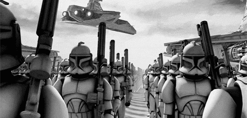
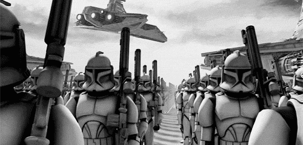
Ovaj period je još i poznat kao "The Prequels" period. Period opisuje situaciju republike gde usled naglog rasta tenzije između centralne vlade i najveće mega korporacije gde vlada pokušava da reguliše mega korporaciju koja koristi svu svoju moć, resurse i uticaje da se odupre. U samom vrhuncu ovog veoma zahuktanog perioda korporacija proglašava nezavisnost i biva podržavana od svih planeta-članica republike koje imaju jako veliki interes ili su ekonomski zavisne od nje. Korišćenjem svojih ogromnih resursa veoma brzo proizvode i raspoređuju armiju robota-droidova čija je svrha bila da zaštite svoju nezavisnost. Naravno, Republika odbacuje ovu izjavu i dolazi do građanskog rata koji ubrzo obuhvata svaki deo galaksije.
 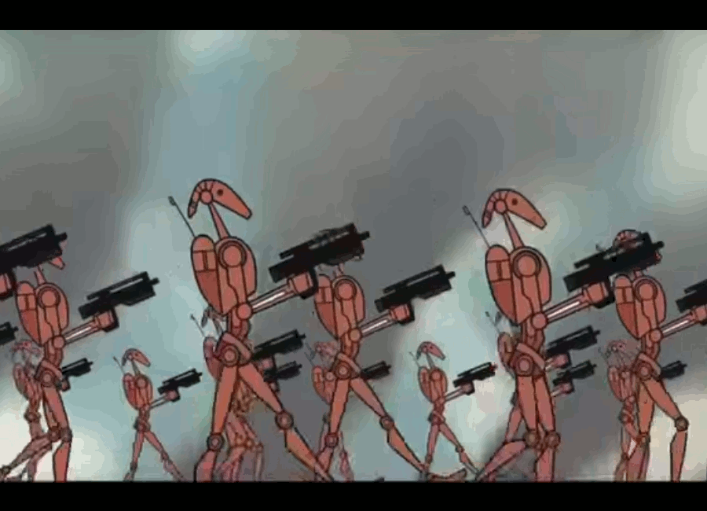
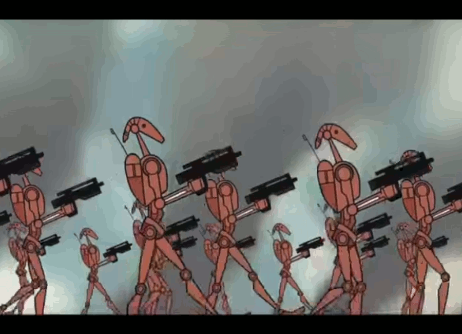
 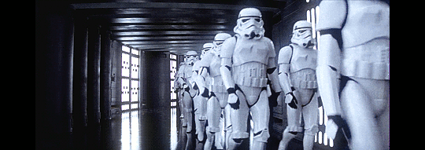
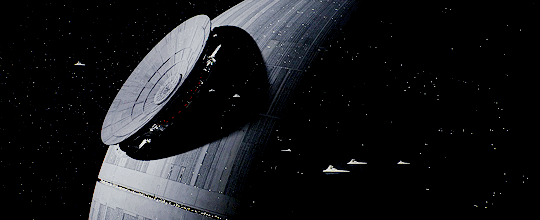
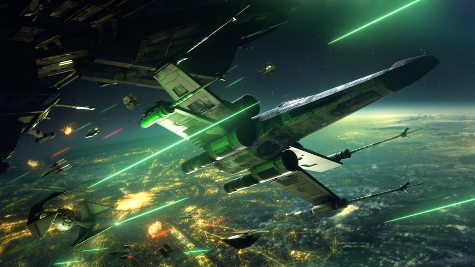
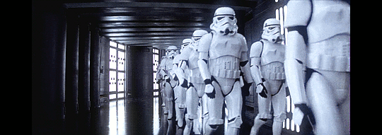
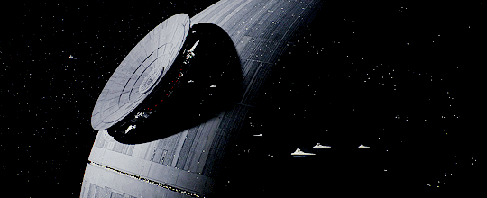
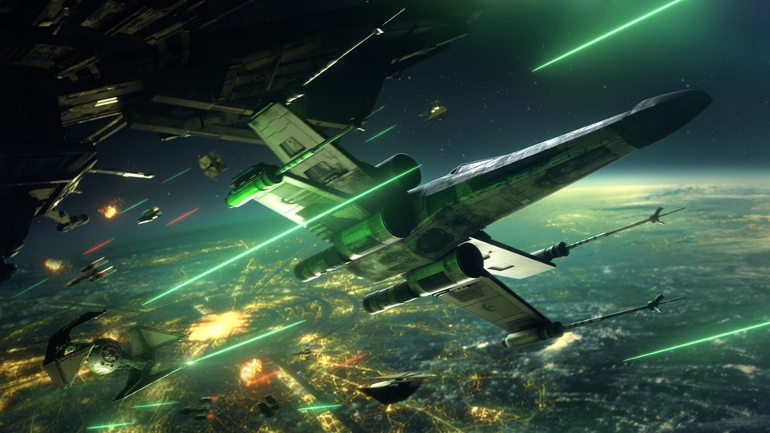
Nakon višedecenijskog konflikta, građanski rat se privodi kraju i deluje kao da će da Republika pobedi. Usled iscpreljnosti ratovanja, obe strane žele da polako privedu kraj ovom konfliktu i opšta atmosfera postaje opuštenija i primećuje se zamor usled ratovanja. Džedaji, koji su do sada bili generali koji su se borili na strani Republike su izgubili poverenje naroda, koje ih postepeno sve više i više gleda kao krvoločne ratnike i najamnike a ne kao čuvare mira i poretka. U tom trenutku Sith frakcija, koja se do sada uglavnom krila pokreće svoj grandiozni plan. Sithovi su uspeli da se uspešno ubace na visoke političke pozicije obe strane tokom rata. Koristeći njehovu moć na obe strane, oni uspešno obustavljaju građanski rat i uzimaju sve zasluge za to i postaju izuzetno popularni i cenjeni u očima naroda. Njihov novostečen prestiž omogućava da im da uz podršku naroda okrive ceo građanski rat na Džedaje, koje počinju da nazivaju ratnim zločincima, teroristima i kreću da ih uhode, love i ubijaju. Na kraju vrhovni vođa Sitha, Shiv Palpatine proglašava krizno stanje i koristeći svoj novostečen autoritet proglašava sebe za cara nove galaktičke imeprije, sastavljenje od obe strane učesnice građanskog rata. Džedaji koji su uspeli da prežive progon zajedno sa političkim protivnicima Palpatina formiraju pokret otpora i počinju da vode gerila rat protiv carstva, započinjući drugi građanski rat. Najveća i najvažnija bitka se vodi oko Deathstar-a, masovnog oružja sposobnog da uništi čitave planete koje je Carstvo sagradilo. U toj bitci pobunjenici ne samo što uspevaju da unište to oružje, već i ubijaju cara, najvažniju i jedinu ličnost koja je držala carstvo u celini. Usled njihove pobede, carstvo se rasparčava na više manjih državica. Neke se ujedinjuju i formiraju takozvanu Novu Republiku. Neke su vojne diktature predvođene generalima carstva, a neke su proglasile svoju neutralnost i generalno pokušavaju da se klone bilo kakvih konflikta.


 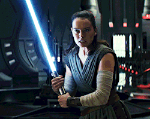
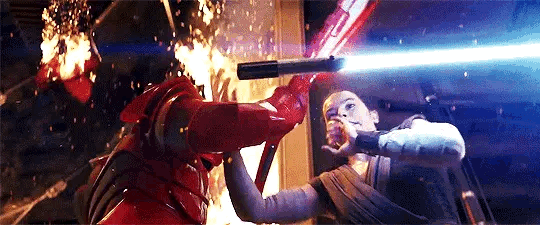
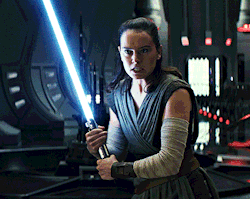
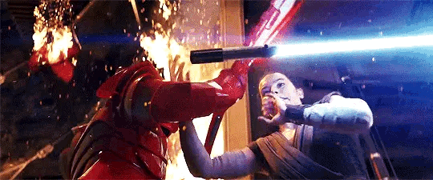

U ovom periodu, priča se fokusira na konflikt između Nove Republike i Prvog Reda, naslednice Republike i Carstva, respektivno, kao i na preostale Džedaje koji pokušavaju da obnove svoju organizaciju, na žalost bez preteranog uspeha. Ovaj period je nastao nakon što je Disney kompanija kupila franšizu nameravajući samo da steknu profit bez obzira na kvalitet njihovog rada i samih filmova. Kao posledica ove pohlepne želje veliki broj stvari je samo recikliran iz prethodna dva perioda. Priče, kulminacije i konflikti su gotovo identični, samo se razlikuju imena i izgledi samih likova.
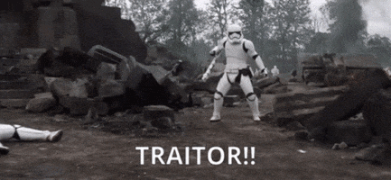 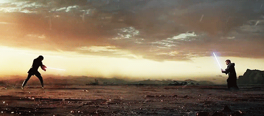 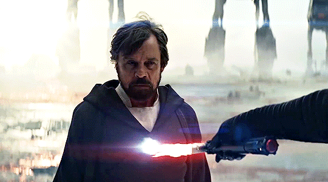Pošto je Star Wars univerzum izuzetno veliki, postoji još više perioda, detalja, pa čak i celih sekcija galaksije koji su detaljnije istražene i obrađene u drugim delima, poput animiranih serija, knjiga, stripova, igrica i još mnogih drugih. Na žalost. skoro ništa od napomenutog materijala je kanonsko, pošto je Disney od akvizicije Star Wars franšize sve te materijale napravio da ne budu kanonski.